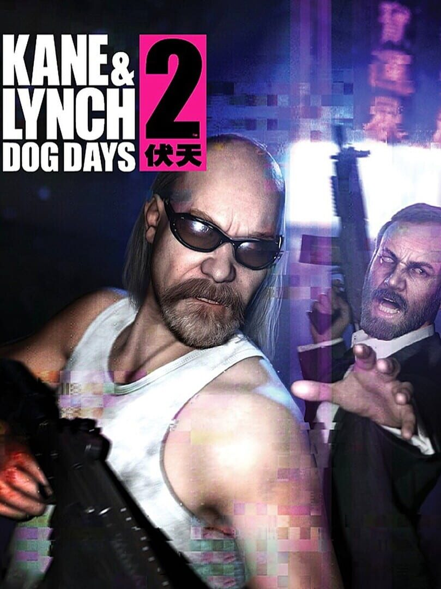

Kane & Lynch 2: Dog Days
Kane & Lynch 2: Dog Days
Details
|  | |
| Playtime | Not Played |
| Last Activity | Never |
| Added | 02/12/2022 9:35:48 |
| Modified | 18/05/2025 1:52:09 |
| Completion Status | Not Played |
| Library | Steam |
| Source | Steam |
| Platform | PC (Windows) |
| Release Date | 17/08/2010 |
| Community Score | 68 |
| Critic Score | 69 |
| User Score | |
| Genre | Adventure Shooter |
| Developer | IO Interactive |
| Publisher | Square Enix |
| Feature | Co-Operative Multiplayer Single Player |
| Links | Steam Official Website Wikia Wikipedia Youtube |
| Tag | Action Adventure Atmospheric Co-op Crime Great Soundtrack Heist Local Co-Op Mature Multiplayer Nudity Open World Psychological Horror Shooter Short Singleplayer Story Rich Third Person Third-Person Shooter Violent |
Description
Play as two of gaming's most disturbing and realistic criminals; Lynch – a self medicated psychopath - and Kane - a disillusioned and desperate ex-mercenary, in a gritty and brutal crime shooter from IO Interactive. Kane and Lynch face the consequences of their actions when a simple job gone wrong finds them on a desperate and frantic struggle to escape. Experience their fight to survive through the back streets and rooftops of Shanghai’s gritty underworld. They can trust no one, not even each other as the cracks begin to appear in Lynch’s sanity and Kane’s stability.
Non-stop action in Single Player, online Co-op and Multiplayer. New and unique Fragile Alliance multiplayer game modes provide an experience to suit all criminal minds.
Non-stop action in Single Player, online Co-op and Multiplayer. New and unique Fragile Alliance multiplayer game modes provide an experience to suit all criminal minds.
- Raw, Real & Uncut - Kane & Lynch 2: Dog Days introduces a unique, unseen visual style to video games. Taking visual references from documentary filmmaking and the user-generated era, Kane & Lynch 2 delivers a sense of intense realism never before experienced.
- Play as Lynch - Play as Lynch and follow his story. He is living a comfortable life in Shanghai, he’s making money and is about to make a fat deal where the pay is beyond his wildest dreams and nothing is going to get in his way.
- Down Not Dead - Adding further intensity to the brutal gameplay, players will have a second chance at taking out their enemies; Choose between continuing the gunfight from the ground or try to escape by crawling towards cover.
- Online Co-op - Play as Kane and Lynch
- Fragile Alliance - The highly celebrated multiplayer experience returns with a collection of new and improved modes.
- From the Creators of the Critically Acclaimed Hitman Series - The studio behind the best-selling Hitman titles and 2007’s Kane & Lynch: Dead Men.